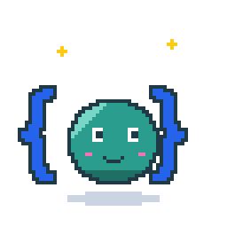
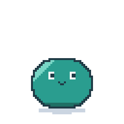
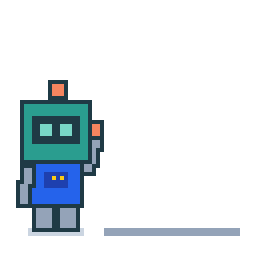
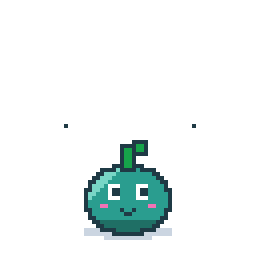

Each animation loops; shown on light and dark backgrounds, plus favicon and avatar sizes.
A smiley held in curly braces ({ ☻ }) that pops UI widgets out of its head.

A jelly blob that becomes whatever the document says: card, button, checkbox.

A robot that catches UI blocks and stacks them into a dashboard.

A tree-spirit that is an AST: it grows nodes, and the leaves become widgets.
